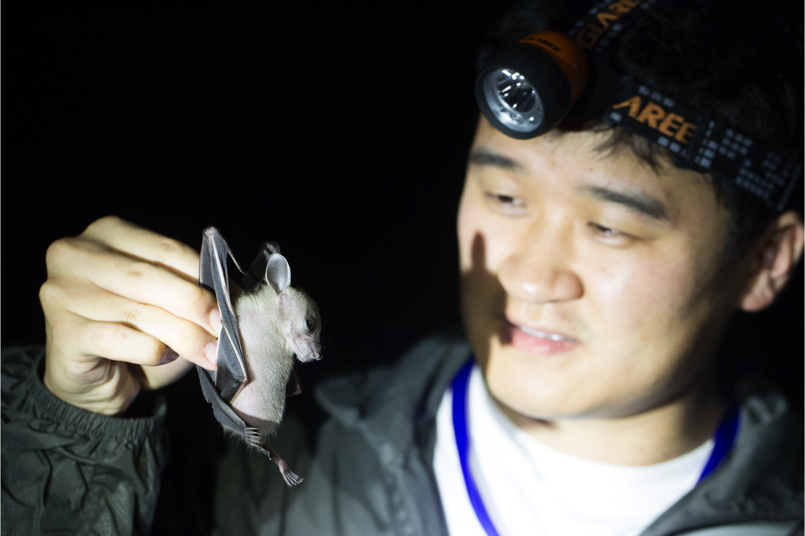
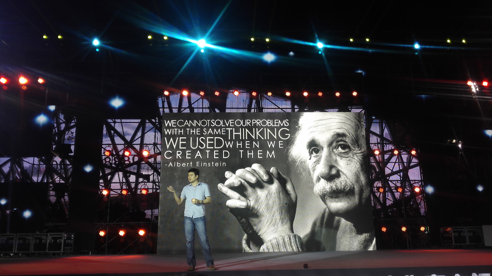
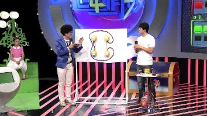
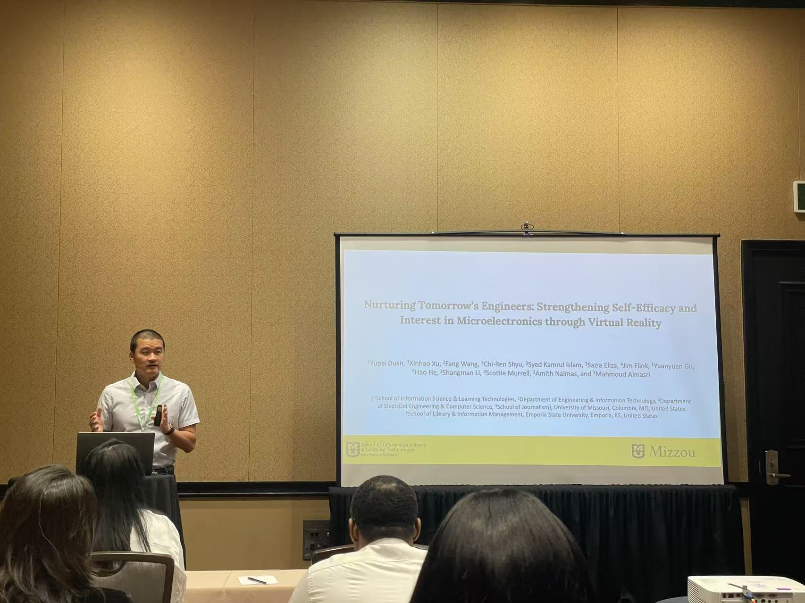

关于我
从课堂走向研究，带着教师的眼光。
多年科学教学与学校管理，让我习惯从具体的人和问题出发：学生怎样理解，教师怎样判断，怎样的帮助才真正有用。这些关切，如今延伸到以人为中心的 AI、沉浸式学习与 STEM 教育研究之中。

我是段玉佩，现为美国密苏里大学信息科学与学习技术专业博士候选人，也是一名教育工作者、学习技术研究者与设计者。
我关注人工智能、沉浸式技术和游戏如何支持 STEM 学习与专业教育。近期工作包括 AI 增强的虚拟患者、沉浸式微电子实验室，以及结合混合现实与生成式 AI 的地理学习环境；研究议题则涉及 AI 素养、问题解决、反思与学习者能动性。我关心技术为学习创造了怎样的条件，也关心学习者能否在其中保持自己的判断与选择。
开始博士学习之前，我在中小学从事了十六年有余的生物与科学教学，也承担过课程与学校管理工作。我曾用四个气泵模拟心脏的四个腔室，用管道充当血管，让学生亲手挤压气泵、观察气球的膨胀，探究血液在身体里怎样流动。这类教学经历，让我始终在意讲授与理解之间的距离：教师讲过了什么，学生真正理解了什么，又能怎样运用。面对新技术时，我仍把教师和学习者的实际需要，放在研究问题的中心。
我在首都师范大学完成生物科学本科学习，后于密苏里大学获得信息科学与学习技术硕士学位，方向为在线教育。在课堂之外，我也翻译科普书、撰写专栏、设计和主持科学节目，尝试让更多人亲近科学。场合各有不同，我关心的仍是科学怎样被人理解。
与科学教育相伴
和学生、观众与同行，一起走近科学。




学术主页与联系方式
沿着这些链接，继续了解我的工作。
联系我